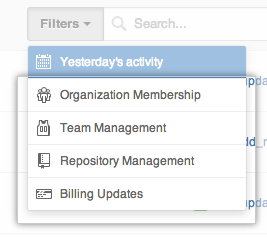
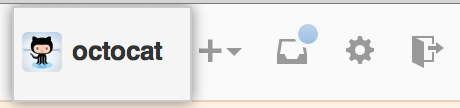
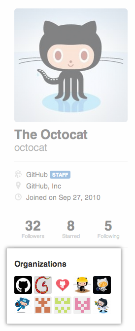
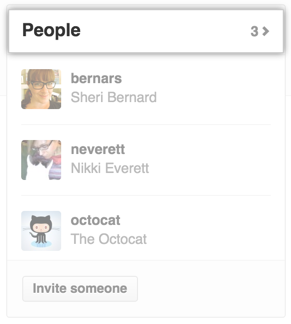
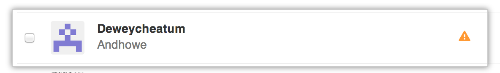
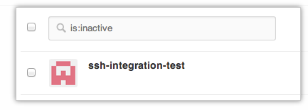
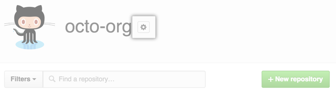
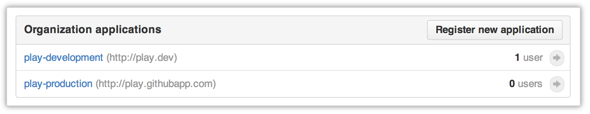

Organization owners have several features to help them keep their projects and data secure. If you're the owner of an organization on GitHub, you should regularly review your organization's audit log, member 2FA status, and application settings to ensure that no unauthorized or malicious activity has occurred.
Review your organization's audit log
The audit log lists actions that members of your organization have performed within the last 90 days. It's a good idea to review the log if you suspect unauthorized activity in your organization.
We provide a list of filters for actions taken by members of your organization. They represent categories and actions that we feel are important to review.

You can construct your own queries for personalized results. For example, if you know that most of your organization members live in a particular country, you can filter actions to exclude activity from that country and show activity from everywhere else. For example, -country:US -country:Canada -country:Mexico excludes North American actions from the audit log. In this case, access to GitHub from a location outside of North America may indicate unauthorized entry.
Ensure that the members of your organization have two-factor authentication enabled
Note: This feature is only available to organizations on a paid plan.
Two-factor authentication (2FA) provides a much more secure experience for interacting with GitHub, and we strongly recommend it for every user. If a malicious user gains access to your organization, they'll be able to access your repositories and settings. You can see which members do not have 2FA enabled on your organization's "People" page.
In the top right corner of any page, click your username. 
On the left side of your profile page, under "Organizations", click the icon for your organization. 
On the right side of the organization profile page, click People. 
Members of your organization without two-factor authentication are listed with an orange triangle. 
- If a member does not have 2FA enabled, they can turn it on from their personal account's security settings page.
You can also access the list of organization members lacking 2FA through the GitHub API. Here's an example script demonstrating how to do this.
Review inactive members of your organization
You can get a list of all members in your organization that have been inactive for over 30 days. Inactive users that you don't recognize may be indicative of a malicious character.
In the top right corner of any page, click your username.
On the left side of your profile page, under "Organizations", click the icon for your organization.
On the right side of the organization profile page, click People.
Type
is:inactivein the search bar. 
Audit applications owned by your organization
Review the applications managed by your organization to verify that no new applications with expansive permissions were authorized and that the callback URLs haven't changed.
In the top right corner of any page, click your username.
On the left side of your profile page, under "Organizations", click the icon for your organization.
To the right of your organization name, click . 
In the left sidebar, click Applications.

Under "Organization applications", click the name of an application to review it. 
Ensure that the callback URL and description are correct. If you suspect that malicious activity has occurred, click Revoke all user tokens to automatically log out all of your users and ensure that their data will have no more unauthorized access.